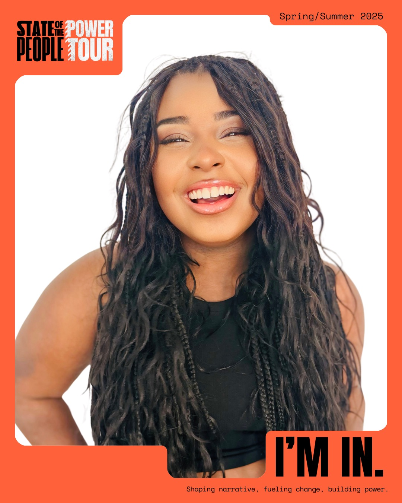

Playwright · Actor · Vocalist · Mental Health Advocate
The Feature
A Los Angeles–based actor, vocalist, and award-winning playwright whose work moves across stage, screen, music, and public storytelling — using narrative as an intervention that names harm clearly while insisting on dignity, repair, and possibility.
Actor
Stage · film · TV
Vocal Artist
Gospel roots · national stages
Playwright
The Perfect Victim
Human Development
Creativity · mental health
Developing film & screen work, releasing original music, and producing and directing that uses culture to shift public understanding around mental health, violence, and repair.
№ 01 — Story as a form of care
The Profile
Payton Aurora Jones is a 20-year-old Los Angeles–based actor, vocalist, award-winning playwright, and advocate whose work centers on healing through the arts. Raised in the church and grounded in gospel tradition, she was shaped by a praying grandmother and a mother whose leadership transformed struggle into service — instilling in Payton the belief that voice carries responsibility and storytelling can be a form of care.
Long before formal training, Payton was invited — often without audition — to sing and perform in churches, civic spaces, and community stages including rallies, public convenings, and advocacy events centered on justice, public health, and community impact. At just ten years old, she was cast as the lead in The Wiz through the Arts & Learning Conservatory, performing a role written for teenagers aged 13–18. That early recognition, rooted in ability rather than access, marked the beginning of a career built through perseverance rather than privilege.
Payton’s understanding of care, urgency, and survival is also deeply personal. As a child, she underwent prolonged treatment for a rare autoimmune skin condition while continuing to perform and attend school. That experience sharpened her awareness of how systems respond to vulnerable bodies — and how bias, access, and advocacy can determine outcomes. Rather than sidelining her artistry, it deepened her commitment to mental health, trauma-informed care, and storytelling as a public health intervention.
As a performer, Payton has carried major musical theatre roles including Elle Woods (Legally Blonde), Donna Sheridan (Mamma Mia!), The Wiz (The Wiz), and Maggie Sanders (Lend Me a Tenor). She continues to develop her craft while expanding into film, writing, and creative leadership — with aspirations to act on screen, release original music, and produce and direct work that uses culture to shift public understanding around mental health, violence, and repair.
“A person’s gift makes room for them and brings them before the great.” Grounded in faith and legacy, she returns to that scripture — using story, song, and presence to make room for healing, dignity, and change.
Award-Winning Playwright
Named a winning playwright for ENOUGH! Plays to End Gun Violence (2025) — one of six chosen from 127 submissions across 28 states. Published through Concord Theatricals, with membership in the Dramatists Guild of America, and premiered October 6 across 40+ venues nationwide.
The play follows the aftermath of the shooting of a Black teen named Malik — tracing the full ecosystem that decides whether a life is saved and honored, and centering Community Violence Intervention as a life-saving solution.
“How Black and brown boys are asked to be perfect just to be treated as human.”— Payton Aurora Jones
Selected Work
on stage & on the pageThe Voice
Singing since age three and in church since five, Payton has carried her voice from congregations to national platforms — the March of Dimes Marathon on NBC 4, CBS KCAL 9, the OC NAACP Juneteenth Celebration, and Creative House International Jazz Day.

Honors & Recognition
Education
California Baptist University — Double Major: Musical Theatre & Psychology (expected Spring 2028). Honors graduate, Hillcrest High School. Member, Dramatists Guild of America.
Training
Community Organizing — Live Free USA · Organizing & Campaign Development — The Advocacy League · Media Training · Gun Violence Prevention — Brady United & NAACP · Digital Underground Fellow · UCI Her Story Camp.
Experience
Youth Advisor on Advocacy & Policy — The Advocacy League (2025–Present). Social Impact Intern — Lead with Me (2021–Present).
Press & Features